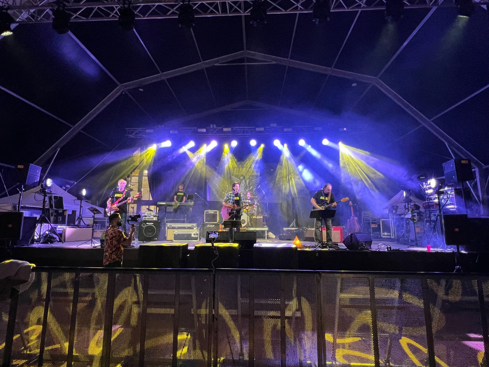
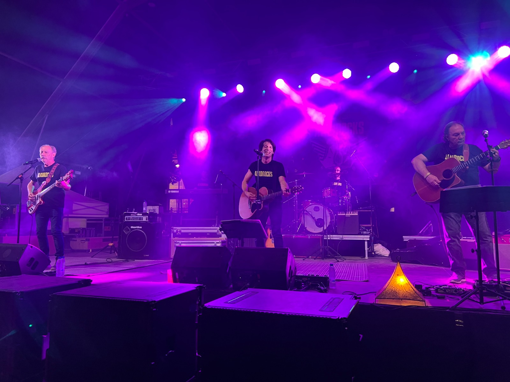
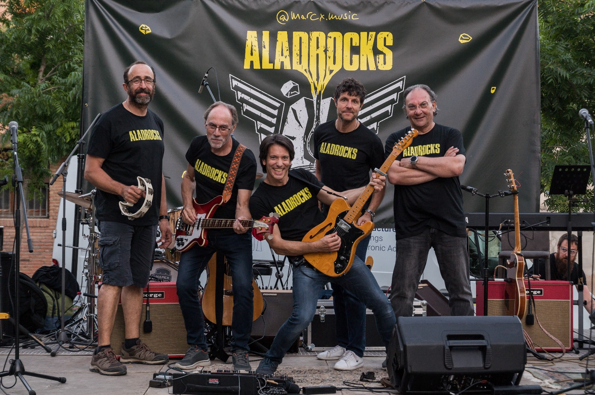

ALADROCKS
Biografia
Aladrocks neix a Caldes de Montbui el 2019. La banda està formada per Marc (veu i guitarra), Jem (veus i baix), Mandru (bateria i percussió), Joan F (teclats) i Joan S (Veus i guitarra). Des del seu primer LP "Caminar" han conquistat festivals com el Sónar, Primavera Sound i el Cruïlla.
El seu so distintiu barreja melodies hipnòtiques, lletres introspectives i una posada en escena visual única. El 2024 van guanyar el premi "Revelació" dels Premis ARC.
Més de 2 milions d’oïdes acumulades a plataformes i una legió de seguidors fidels acompanyen cada nova proposta. Benvinguts al viatge sònic d’Aladrocks.
2.3M+
streams anuals
85+
concerts internacionals
12k
seguidors IG
Galeria



Contacte
aladrocks@gmail.com
+34 123 45 67 89
Caldes de Montbui, Catalunya